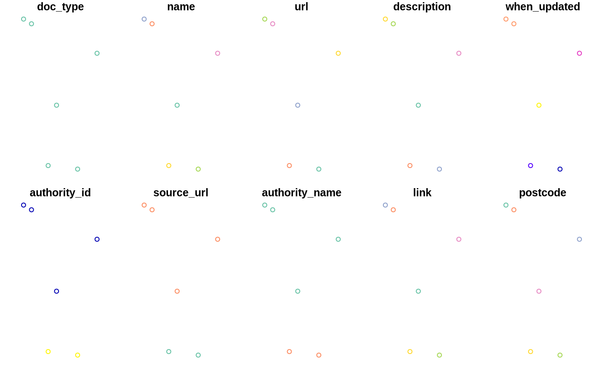
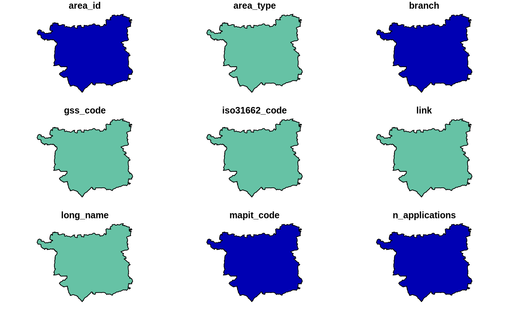

This function requests data from [planit.org.uk](https://www.planit.org.uk). See their [API spec](https://www.planit.org.uk/api/) and their [data dictionary](https://www.planit.org.uk/dictionary/) for further information.
get_planit_data( query_type = "applics", query_value = NULL, fmt = "geojson", base_url = "https://dev.planit.org.uk", limit = 6, end_date = as.character(Sys.Date()), start_date = "2000-02-01", auth = NULL, pcode = NULL, krad = NULL, bbox = NULL, app_size = NULL, app_state = NULL, app_type = NULL, silent = FALSE )
| query_type | The type of query (`"applics"` by default) |
|---|---|
| query_value | Text string associated with the `query_type`. To be used only when `query_type` is not `"applics"`. |
| fmt | The format of the output (`"geojson"` returns an `sf` object, `"json"` returns a data frame) |
| base_url | The base URL of the service |
| limit | How many items to return (e.g. 6, default) |
| end_date | E.g. `"2009-02-01"`. Default is `as.character(Sys.Date())`. |
| start_date | The earliest application (date of application) to be filtered `"2000-02-01"` |
| auth | Authority name |
| pcode | Postcode = UK postcode to use for the centre of a location search |
| krad | Radius (km) = only planning applications within the circle perimeter are returned (default 2) |
| bbox | Bounding box in the form of xmin, ymin, xmax, ymax, e.g.: `c(-1.3, 53.7, -1.2, 53.9)` |
| app_size | PlanIt classification for the size of planning applications. Values are `"large"` `"medium"` and `"small"` |
| app_state | Current decision status of the planning application (Undecided, Permitted, Conditions, Rejected, Withdrawn, Referred, Unresolved, Other) |
| app_type | Type of the application (Full, Outline, Amendment, Heritage, Trees, Advertising, Telecoms, Other) |
| silent | Do you want a message? Default is `FALSE` |
A (geographic) data frame
# tmaptools::bb("university leeds") # find a bounding box bbox = c(-1.5, 53.7, -1.3, 53.8) res = get_planit_data(bbox = bbox, silent = FALSE) # return geographic (`sf`) object#>class(res)#> [1] "sf" "tbl_df" "tbl" "data.frame"names(res)#> [1] "address" "altid" "app_size" "app_state" #> [5] "app_type" "associated_id" "authority_id" "authority_name" #> [9] "consulted_date" "decided_date" "description" "distance" #> [13] "docs" "lat" "link" "lng" #> [17] "name" "other_fields" "postcode" "rec_type" #> [21] "reference" "source_url" "start_date" "uid" #> [25] "url" "when_updated" "geometry"get_planit_data(fmt = "json", limit = 2, bbox = bbox) # return data frame with limit#>#> address altid app_size app_state #> 1 The Lodge Pottery Lane Woodlesford Leeds LS26 8PL NA Small Undecided #> 2 South Side Of Selby Road Halton Leeds LS15 NA Small Undecided #> app_type associated_id authority_id authority_name consulted_date #> 1 Trees NA 292 Leeds NA #> 2 Telecoms NA 292 Leeds NA #> decided_date #> 1 NA #> 2 NA #> description #> 1 T1 Willow - The proposed work is to repollard the tree back to original pollard points to eliminate potential failures from old unions and damage to vehicles on the highway. #> 2 Determination of telecommunications equipment #> distance lat link #> 1 NA 53.75887 https://dev.planit.org.uk/planapplic/Leeds/20/05701/TR/ #> 2 NA 53.79706 https://dev.planit.org.uk/planapplic/Leeds/20/05616/DTM/ #> lng name postcode rec_type reference #> 1 -1.443580 Leeds/20/05701/TR LS26 8PL PlanApplic NA #> 2 -1.439629 Leeds/20/05616/DTM <NA> PlanApplic NA #> source_url #> 1 https://publicaccess.leeds.gov.uk/online-applications/search.do?action=advanced #> 2 https://publicaccess.leeds.gov.uk/online-applications/search.do?action=advanced #> start_date uid #> 1 2020-09-08 20/05701/TR #> 2 2020-09-07 20/05616/DTM #> url #> 1 https://publicaccess.leeds.gov.uk/online-applications/applicationDetails.do?activeTab=summary&keyVal=QGC9FOJBH2B00 #> 2 https://publicaccess.leeds.gov.uk/online-applications/applicationDetails.do?activeTab=summary&keyVal=QG9Y2NJBMQO00 #> when_updated #> 1 2020-09-09T00:49:10.036000+01:00 #> 2 2020-09-09T00:49:10.037000+01:00get_planit_data(fmt = "json", limit = 2, auth = "leeds")$description#>#> [1] "Two storey and single storey side/rear extension including decking and paved area to rear - NON MATERIAL AMENDMENT to 20/02806/FU - Provide with additional roof light in the master bedroom at first floor." #> [2] "T1 - Beech - to crown lift lowest branch to 1.5m and crown thin by approx 10%Reasons = crown lift in accordance with recommended clearance for highways, to crown thin to maintain balanced shape and form."get_planit_data(end_date = "2008-01-01", limit = 2, bbox = bbox)$description # historic data#>#> [1] "Conversion of garage to habitable room" #> [2] "Change of use of first floor toning bed salon to holistic fitness studio"get_planit_data(pcode = "LS2 9JT", limit = 2, bbox = bbox)$description # data from specific postcode#>#> [1] "Alterations to entrance and windows to front of university building" #> [2] "Consent, agreement or approval required by condition 2 of Planning Application 08/04348/FU"get_planit_data(query_type = "planapplic", query_value = "13/05235/FU@Leeds")$description#>#> [1] "Full application for 189 new homes including affordable houses and elderly persons apartments, commercial facilities including retail and industrial/employment units and outline application for additional commercial uses"get_planit_data(query_type = "planarea", query_value = "leeds")$description#>#> Warning: Unknown or uninitialised column: `description`.#> NULLleeds_area = get_planit_data(query_type = "areas", limit = 2, auth = "Leeds")#>#> Warning: plotting the first 9 out of 25 attributes; use max.plot = 25 to plot allplanitareas = get_planit_data(query_type = "areas", limit = 2)#>nrow(planitareas)#> [1] 2planitareas$name#> [1] "Aberdeen" "Aberdeenshire"planitareas#> Simple feature collection with 2 features and 25 fields #> geometry type: MULTIPOLYGON #> dimension: XY #> bbox: xmin: -14.01552 ymin: 54.43398 xmax: -0.320965 ymax: 61.061 #> geographic CRS: WGS 84 #> # A tibble: 2 x 26 #> area_id area_type branch gss_code iso31662_code link long_name mapit_code #> <int> <chr> <dbl> <chr> <chr> <chr> <chr> <int> #> 1 384 Scottish… 2 S120000… GB-ABE http… Aberdeen… 2650 #> 2 385 Scottish… 2 S120000… GB-ABD http… Aberdeen… 2648 #> # … with 18 more variables: n_applications <int>, n_children <int>, #> # n_siblings <int>, name <chr>, openlylocal_code <chr>, osm_rel_code <chr>, #> # own_applications <int>, parent_id <int>, parent_name <chr>, #> # planning_url <chr>, rec_type <chr>, snac_code <chr>, source <chr>, #> # source_url <chr>, url <chr>, when_updated <dttm>, linked_regions <list>, #> # geometry <MULTIPOLYGON [°]>